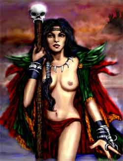
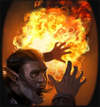
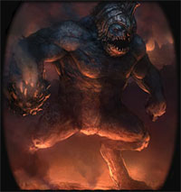

Enciclica di nuovi incantesimi di Azatàr

ORISONS DI AZATÀR
| Little Black Smoke | Conjuration |
| Sphere : | Combat |
| Range : | 9 metri |
| Components : | V, S |
| Duration : | 2 round |
| Casting Time : | 4 |
| Area of Effect : | Una creatura |
| Saving Throw : | Negates |
Qualora la vittima di questa magia non supera un tiro salvezza su magia, una nuvola di fumo acre e grigiastro apparirà dinanzi il suo viso. La presenza della nube imporrà alla vittima una penalità di -2 ai tiri per colpire e del 20% di fallire nel lancio delle magie. Questa magia non ha alcun effetto su creature non dotate di comuni organi visivi.
| Minor Flame Burst | Evocation |
| Sphere : | Elemental Fire |
| Range : | 9 metri |
| Components : | V, S |
| Duration : | Istantanea |
| Casting Time : | 4 |
| Area of Effect : | Una creatura |
| Saving Throw : | Negates |
Quando il chierico lancia questa magia una fiammata parte dalle sue mani dirigendosi verso la vittima la quale potrà evitarla superando un tiro salvezza su riflessi. Se il tiro salvezza fallisce la vittima sarà colpita dalla fiammata subendo 1d3 danni da fuoco magico.
1° LIVELLO DI POTERE
| Demonic Nourishment | Alteration |
| Sphere : | Necromancy |
| Range : | Tocco |
| Components : | V, S, M |
| Duration : | Speciale |
| Casting Time : | 1 round |
| Area of Effect : | Un fedele di Azatàr |
| Saving Throw : | None |
Quando questo incantesimo è lanciato su una creatura, costei potrà decidere, nel corso dell'intero periodo di flusso di energia divina di Azatàr, di nutrirsi, un'unica volta, della carni di un essere abbattuto al fine di rigenerare le proprie ferite. Deve osservarsi che questo incantesimo non può essere lanciato validamente su una creatura fino a che risulta attivo un medesimo incantesimo lanciato precedentemente. In particolare, quest'azione complessa che non richiede il mantenimento della concentrazione ma l'invocazione orale (componente vocale) del nome di Azatàr, deve essere effettuata nel round immediatamente successivo alla morte di una creatura giudicata commestibile dal Dungeon Master. L'azione, che può essere compiuta anche dopo un mezzo movimento, si considererà iniziata da un fattore iniziativa pari a quello di una comune azione fisica e terminerà alla fine del round in corso. Fino alla fine del round il chierico si considererà chinato (come per recuperare un oggetto da terra) subendo una penalità alla classe armatura pari a +2 e non potendo utilizzare i bonus della destrezza (potendo però usare quelli dello scudo). Alla fine del round (come ultima azione) la creatura si considererà regolarmente in piedi e rigenererà un ammontare di punti ferita persi pari ad 1 punti ferita per livello/dado vita della creatura divorata fino ad un massimo di punti ferita rigenerati pari al doppio dei suoi dadi vita/livelli di esperienza. Si noti che solo il primo essere che si nutre della creatura (si consideri l'inizio dell'attività di divorare) otterrà l'effetto rigenerativo mentre per le altre creature il potere non si considererà utilizzato. Deve osservarsi infine che questa rigenerazione non cura direttamente i danni prodotti da colpi critici ma può, se indirizzata su questi, velocizzare il loro recupero (in tal caso non sono però recuperati punti ferita). In ogni caso, inoltre, questa rigenerazione non cura le emorragie. Una volta utilizzata la magia terminerà immediatamente i suoi effetti. Il componente materiale di questo incantesimo è una miniatura in argento di cuore umano dal peso di 0,2 libbre e dal costo di 5 monete d'oro che si consuma al lancio della magia.
| Demonic Weapon | Enchantment |
| Sphere : | Combat |
| Range : | Tocco |
| Components : | V, S, M |
| Duration : | Speciale |
| Casting Time : | 1 round |
| Area of Effect : | Un'arma da corpo a corpo |
| Saving Throw : | Nessuno |
Attraverso l'uso di questo incantesimo il chierico di Azatàr può incantare un'arma da corpo a corpo rendendola uno strumento demoniaco. Qualora l'arma così incantata, infatti, sarà utilizzata da un fedele di Azatàr in combattimento la stessa permetterà di infliggere al primo colpo andato a segno danni notevoli. In particolare, al primo attacco andato a segno in corpo a corpo l'arma provocherà automaticamente (senza che possa essere effettuato alcun tiro) danno pari all'80% del danno massimo producibile dalla stessa arrotondato per difetto. Dovrà, a tal fine, considerarsi unicamente il dado di danno dell'arma. Qualora, ad esempio, la magia è lanciata su una spada bastarda utilizzata ad una mano, capace di infliggere comunemente 1d8+1 danni, l'arma provocherà al primo attacco andato a segno automaticamente 7 danni (senza che sia richiesto alcun tiro) ai quali saranno poi sommati i vari modificatori. Una volta realizzatosi l'effetto suddetto la magia terminerà immediatamente. Qualora l'incantamento non sia utilizzato entro la fine del momento di flusso di energia divina di Azatàr la magia terminerà ugualmente. Deve osservarsi che questo incantesimo non può essere lanciato validamente su una creatura fino a che risulta attivo un medesimo incantesimo lanciato precedentemente. Il componente material di questa magia è una sfera costituita da un misto di sangue umanoide e guano di pipistrello dal valore di 3 monete d'oro e dal peso di 0,1 libbra che si consuma al lancio della magia.
| Lesser Infernal Flame | Evocation |
| Sphere : | Combat |
| Range : | 6 metri + 3 metri ogni 2 livelli oltre il 1° |
| Components : | V, S |
| Duration : | Istantanea |
| Casting Time : | 3 |
| Area of Effect : | Una creatura |
| Saving Throw : | 1/2 |
|
 |
Lanciando questa magia il chierico di Azatàr fa sprigionare dalle sue mani una piccola sfera di fuoco che colpisce il nemico selezionato, ad una distanza massima di 6 metri + 3 metri ogni due livelli di esperienza oltre il primo (6 metri al 1° e 2° livello di esperienza, 9 metri al 3° e 4° livello di esperienza, e così via...) fino ad un massimo di 18 metri a partire dal 9° livello di esperienza. La creatura colpita subirà 1-6 danni da fuoco magico, +1 un danno da fuoco ogni due livelli di lancio della magia (1d6 danni al 1° livello, 1d6+1 al 2° e 3° livello, 1d6+2 al 4° e 5° livello e così via...) fino ad un massimo di 1d6+5 danni da fuoco a partire dal 10° livello di lancio. Superando un tiro salvezza su riflessi, però, la vittima potrà dimezzare i danni subiti. |
| Toxic Emission | Conjuration |
| Sphere : | Combat |
| Range : | 15 metri |
| Components : | V, S, M |
| Duration : | 5 round |
| Casting Time : | 5 |
| Area of Effect : | Una creatura |
| Saving Throw : | Speciale |
Quando il chierico di Azatàr lancia questa magia la vittima deve superare un tiro salvezza su magia. Se il tiro salvezza fallisce la vittima viene circondata da emissioni gassose dal forte puzzo di zolfo e dal colore giallo intenso che la seguiranno dovunque essa si sposti. La vittima, dunque, dovrà superare un tiro salvezza contro veleno senza applicazione di alcun modificatore, se il tiro avrà successo la stessa non subirà alcuna penalità per il round in corso, altrimenti sarà intossicata dalle sostanze venefiche contenute nel gas e non potrà far altro che tossire e dibattersi. La vittima, quindi, sarà considerata stordita (stunned) per tutto il round. All'inizio di ogni nuovo round di durata della magia la vittima dovrà ripetere nuovamente il tiro salvezza contro veleno. La nube con i suoi effetti venefici può essere dissolta con uno spell di dispel magic o con forte vento centrato sulla stessa (come con gust of wind) oppure immergendo completamente il corpo della creatura nell'acqua od in altro liquido similare. La sostanza tossica emessa dalla magia dovrà essere considerata a tutti gli effetti come un veleno allo stato gassoso. Il componente materiale di questo incantesimo è un pugno di zolfo misto a terreno vulcanico che si consuma al lancio della magia (si vende in corni d'osso dal peso di 2 libbre e dal costo di 17 g.p., il corno contiene 10 dosi).
2° LIVELLO DI POTERE
|
|
| Chains of Imprisonment | Conjuration |
| Sphere : | Combat |
| Range : | 18 metri |
| Components : | V, S, M |
| Duration : | Speciale |
| Casting Time : | 5 |
| Area of Effect : | Una o più creature |
| Saving Throw : | Negates |
|
|
Quando il chierico lancia questo incantesimo, dal terreno sotto le vittime designate appariranno catene metalliche che proveranno ad incatenarle. Questa magia può essere lanciata solo di creature di taglia compresa tra small e large. Le vittime potranno provare a superare un tiro salvezza contro magia per evitare gli effetti dell'incantesimo. Se il tiro salvezza fallisce la vittima non potrà spostarsi dalla posizione occupata e sarà considerata per tutti gli altri effetti come incapacitata. A partire dal round successivo a quello di lancio la vittima potrà provare a liberarsi dalle catene. Si tratta di un'azione complessa dalla durata dell'intero round che prevede l'accumulo di un punto fatica. Al termine del round la vittima potrà superare un tiro salvezza su robustezza modificato dalla forza in luogo che dalla costituzione. A tale tiro si applicherà, inoltre, esclusivamente una penalità di -1% per livello di lancio della magia. Se il tiro salvezza riesce la vittima sarà libera e le catene svaniranno. In ogni caso le catene svaniranno trascorsi 10 round dal momento di lancio dell'incantesimo. Il chierico può far apparire le catene su una vittima supplementare ogni 2 livelli di lancio della magia oltre il quarto, fino ad un massimo di 3 creature all'ottavo livello di lancio (sempre che le vittime siano tutte entro il raggio della magia e si trovino nell'arco frontale del chierico). Al momento del lancio della magia, inoltre, un chierico che potenzialmente ha accesso a queste catene supplementari può decidere di lanciare la magia su un numero minore di vittime sacrificando una o entrambe le catene supplementari al fine di rafforzare la capacità di imprigionamento delle altre. In pratica, quando il chierico effettua questa scelta la vittima subirà rispettivamente una penalità di -5% o di -10% al tiro salvezza su robustezza qualora il chierico abbia rinunciato ad una od ad entrambe le catene supplementari (la vittima non subirà però alcuna penalità al tiro salvezza contro magia). Il componente materiale di questa magia è un pezzo di catena utilizzata per un anno nelle prigioni dal peso di 0.5 libbre e dal costo di 3 monete d'oro che si consuma al lancio dell'incantesimo. |
| Flaming Skull | Conjuration/Summoning |
| Sphere : | Combat |
| Range : | 0 |
| Components : | V, S, M |
| Duration : | Speciale |
| Casting Time : | 6 |
| Area of Effect : | Area circolare di 15 metri di diametro |
| Saving Throw : | None |
 |
Utilizzando questo incantesimo il chierico di Azatàr chiede alla propria divinità di mostrare il suo potere demoniaco. Dopo il lancio della magia, infatti, un teschio di fiamme roteante compare fluttuando nell'aria a qualche metro di altezza sulla testa del chierico. Gli effetti demoniaci di questo incantesimo sono in grado di incitare tutti i fedeli di Azatàr che si trovano nell'area d'effetto della magia (ivi compreso il chierico che ha lanciato la magia) a combattere con estrema ed innaturale ferocia. Costoro otterranno fino a che si troveranno nell'area d'effetto della magia un bonus di +1 a tutti i tiri per colpire e di +1 ai danni (bonus che si considera a tutti gli effetti come dovuto alla forza della creatura). Si noti che questi bonus, come del resto ogni altro bonus di origine divina, non si cumulano con bonus, sempre di origine divina, che incidano sul medesimo tiro od effetto. Una volta comparso, il teschio fiammeggiante resterà stabile nella sua posizione senza poter essere spostato (ovviamente il teschio può regolarmente essere dissolto con la magia). L'area d'effetto di questa magia è pari ad un'area circolare di 15 metri di diametro centrata sulla posizione occupata dal chierico al lancio della magia. La durata di questo incantesimo è pari a 5 round (7 round se il chierico utilizza un teschio incantato con l'incantamento minore Skull of the Flames). Il componente materiale di questa magia è un teschio umano in perfette condizioni in precedenza annerito da un procedimento di carbonizzazione e successivamente abbellito con rune rituali in oro puro, dal peso pari a 2 libbre e dal valore minimo di 100 monete d'oro che non si consuma al lancio dell'incantesimo. |
| Devourer Eye Summoning | Summoning |
| Sphere : | Summoning |
| Range : | Speciale |
| Components : | V, S, M |
| Duration : | 1 ora |
| Casting Time : | 5 round |
| Area of Effect : | Speciale |
| Saving Throw : | None |
|
|
Questo
incantesimo rituale permette al chierico di convocare ad esistenza
una creatura demoniaca. Si tratta di una convocazione reale che apre un
piccolo portate dimensionale con i piani esterni inferiori nei quali si
trovano i demoni convocati. Sempre attraverso la magia del rituale,
inoltre, il chierico di Azatàr prova a costringere la creatura
richiamata a servirlo per un periodo di tempo determinato nel corso del
lancio dell'incantesimo.
Per effettuare il rituale il chierico deve disegna su un pavimento
solido un cerchio del richiamo di 3 metri di diametro, posizionando
lungo la sua circonferenza le candele rituali ed utilizzando gli altri
componenti materiali richiesti. Il rituale ha una durata di 5 rounds
durante i quali il chierico deve regolarmente mantenere la
concentrazione e deve restare in una posizione adiacente al cerchio del
richiamo. Se, per qualsiasi motivo, il rituale è interrotto oppure il
chierico perde la concentrazione o si allontana dal cerchio di
convocazione l'incantesimo si considererà fallito. Al termine dei 5
rounds il chierico dovrà effettuare la prova per determinare se il
rituale ha avuto successo. Si noti che il chierico non può lanciare
alcun altro incantesimo del medesimo tipo (anche se di diverso livello
di potere) fino a che ha sotto il suo controllo un qualsiasi demone
precedentemente richiamato. Con un'azione complessa della durata di un
intero round, che utilizza componenti verbali e somatici e che richiede
il mantenimento della concentrazione, il chierico può, però, liberare il
demone che ha sotto controllo permettendo allo stesso di svanire per
ritornare al proprio piano di esistenza originario. Per calcolare la
percentuale di successo richiesta al fine di controllare la creatura
demoniaca convocata si applichino i seguenti modificatori: |
| Minor Wall of Heat | Conjuration |
| Sphere : | Elemental Fire |
| Range : | 21 metri |
| Components : | V, S, M |
| Duration : | 3 round + 1 round per livello |
| Casting Time : | 4 |
| Area of Effect : | Speciale |
| Saving Throw : | Nessuno |
Questa magia permette al chierico di creare un muro statico di inteso calore. L'area d'effetto della magia corrisponde ad un numero di sfere (esagoni) di 3 metri di diametro pari a 2 + 1 sfera supplementare ogni due livelli di lancio della magia (4 al 4° e 5° livello di lancio, 5 al 6° e 7° livello di lancio, e così via...) fino ad un massimo di 7 sfere al 10° livello di lancio. Il chierico può disporre queste aree a piacimento purché siano disposte senza soluzione di continuità tra di loro e siano tutte allo stesso livello di altezza dal suolo (non potendosi disporre una sull'altra). La vista attraverso il muro, nonché da dentro od all'interno dello stesso, è distorta e non precisa a causa delle continue onde di calore emesse dalla magia, per questo motivo tutti gli attacchi effettuati da una parte all'altra del muro subiranno una penalità di -1 al tiro per colpire, inoltre qualora siano lanciati incantesimi attraverso il muro vi sarà il 10% di fallimento nel lancio delle magie proprio a causa della minore visione (si consideri, a tutti gli effetti, questa penalità come assimilabile alla penalità imposta da una foresta). Il muro può essere attraversato facilmente e senza danni ma tutti gli esseri che alla fine di un qualsiasi round di durata della magia si trovano all'interno di una posizione occupata dal muro subiranno 2 punti danno a causa dell'intenso calore al 4° livello di lancio (la magia non può essere lanciata validamente ad un livello inferiore al quarto) + 1 danno supplementare da calore comune ogni 2 livelli di lancio oltre il quarto (2 danni da calore al 4° e 5° livello, 3 danni da calore al 6° e 7° livello, ecc...) fino ad un massimo di 5 danni al 10° livello. Il muro non produce alcuna fiamma e non brucia gli oggetti con cui viene in contatto che possono però liquefarsi. Si noti che le creature incorporee possono restare all'interno dell'area d'effetto senza subire alcun danno. Il componente materiale di questo incantesimo è un pezzo di carbone ottenuto dalla combustione del legno di un albero raro dal peso di 0,2 libbre e dal costo di 10 monete d'oro che si consuma al lancio della magia.
| Pain of the Hell | Alteration |
| Sphere : | Combat |
| Range : | 18 metri |
| Components : | V, S, M |
| Duration : | 1 round + 1 round per livello |
| Casting Time : | 5 |
| Area of Effect : | Una creatura |
| Saving Throw : | Negates |
Questo incantesimo fa divenire la pelle di una creatura infiammabile come se fosse di cartone. Se dopo il lancio della magia la vittima subisce un qualsiasi danno da fuoco la sua pelle prenderà fuoco come se fosse di carta trasformando presto il malcapitato in una torcia umana. La creatura può però effettuare un tiro salvezza contro magia per evitare gli effetti dell'incantesimo. In pratica per tutta la durata di questo incantesimo la vittima prenderà fuoco alla fine di ogni round in cui avrà subito almeno un danno da fuoco effettivo. Il round successivo a quello in cui ha subito un danno da fuoco, quindi, la vittima continuerà a bruciare subendo 1-6 danni da fuoco comune alla fine del round. Qualora, inoltre, le fiamme non sono estinte la vittima subirà ad ogni nuovo round di durata della magia un ulteriore danno da calore pari a quello subito nel round precedente aumentato di uno (1d6 danni alla fine del primo round, 1d6+1 danni alla fine del secondo round, e così via...). Infatti, le fiamme così prodotte non sono magiche e possono essere spente normalmente anche se diviene sempre più difficile mano mano che il corpo della creatura prende fuoco. La vittima potrà, infatti, spegnerle sia immergendosi totalmente nell'acqua oppure seppellendo interamente il proprio corpo oppure ritrovandosi interamente nel vuoto (in questo caso si spegneranno immediatamente) sia rotolandosi a terra e sbattendosi panni addosso (azione che richiede un'azione complessa e necessita di acquisire la posizione di sdraiato al suolo, knockdown) nel qual caso è richiesto il superamento di un tiro salvezza su riflessi senza l'applicazione di alcun modificatore se non una penalità pari a -5% per ogni bonus di +1 accumulato al danno da fuoco subito per le su menzionate regole. Si noti che, anche dopo che sono state spente le fiamme, qualora la vittima subisca ulteriori danni da fuoco, sempre nel corso della durata di questo incantesimo, il suo corpo prenderà nuovamente fuoco. Questo incantesimo non ha alcun effetto su creature immuni al fuoco (draghi rossi, elementali del fuoco, ecc…) e contro creature incorporee o non dotate di pelle organica (costruiti ad eccezione del flesh golem, cubo gelatinoso e melme varie). Il componente materiale è costituito da 2 fogli di carta arrotolati (dal valore di 1 g.p. l'uno e dal peso di 0,1 libbra) che sono consumati (bruciati) quando la magia è lanciata.
3° LIVELLO DI POTERE
| Ash Soldier Summoning | Summoning |
| Sphere : | Summoning |
| Range : | Speciale |
| Components : | V, S, M |
| Duration : | 1 ora |
| Casting Time : | 5 round |
| Area of Effect : | Speciale |
| Saving Throw : | None |
|
 |
Questo
incantesimo rituale permette al chierico di convocare ad esistenza una
creatura demoniaca. Si tratta di una convocazione reale che apre un
piccolo portate dimensionale con i piani esterni inferiori nei quali si
trovano i demoni convocati. Sempre attraverso la magia del rituale,
inoltre, il chierico di Azatàr prova a costringere la creatura
richiamata a servirlo per un periodo di tempo determinato nel corso del
lancio dell'incantesimo.
Per effettuare il rituale il chierico deve disegna su un pavimento
solido un cerchio del richiamo di 3 metri di diametro, posizionando
lungo la sua circonferenza le candele rituali ed utilizzando gli altri
componenti materiali richiesti. Il rituale ha una durata di 5 rounds
durante i quali il chierico deve regolarmente mantenere la
concentrazione e deve restare in una posizione adiacente al cerchio del
richiamo. Se, per qualsiasi motivo, il rituale è interrotto oppure il
chierico perde la concentrazione o si allontana dal cerchio di
convocazione l'incantesimo si considererà fallito. Al termine dei 5
rounds il chierico dovrà effettuare la prova per determinare se il
rituale ha avuto successo. Si noti che il chierico non può lanciare
alcun altro incantesimo del medesimo tipo (anche se di diverso livello
di potere) fino a che ha sotto il suo controllo un qualsiasi demone
precedentemente richiamato. Con un'azione complessa della durata di un
intero round, che utilizza componenti verbali e somatici e che richiede
il mantenimento della concentrazione, il chierico può, però, liberare il
demone che ha sotto controllo permettendo allo stesso di svanire per
ritornare al proprio piano di esistenza originario. Per calcolare la
percentuale di successo richiesta al fine di controllare la creatura
demoniaca convocata si applichino i seguenti modificatori: |
| Demonic Violence | Alteration |
| Sphere : | Combat |
| Range : | 0 |
| Components : | V, S |
| Duration : | 5 round |
| Casting Time : | 1 round |
| Area of Effect : | The caster |
| Saving Throw : | None |
Quando il chierico lancia questa magia costui viene pervaso dalla furia demoniaca della propria divinità. Per tale motivo per tutta la durata della magia quando costui colpisce un avversario con un attacco in corpo a corpo provocandogli almeno un danno effettivo (non essendo validi i danni assorbiti da protezioni o riduzioni) questi sarà infervorato dal sangue versato ricevendo la possibilità di effettuare, esclusivamente contro il medesimo avversario attaccato, un attacco supplementare nel medesimo round. Si tratta a tutti gli effetti di un attacco multiplo successivo che sarà effettuato nella fase finale del round in cui il chierico ha colpito la propria vittima dopo gli altri attacchi eventualmente a disposizione del chierico. Trattandosi di un attacco effettuato in preda a delirio di ferocia, però, si tratterà di un colpo molto violento ma estremamente impreciso. Per tale motivo, infatti, il chierico riceverà all'attacco in questione una penalità di -2 al tiro per colpire ed un bonus di +3 ai danni (bonus che si considera a tutti gli effetti come un bonus dovuto alla forza dell'attaccante).
|
|
| Fanatic Nourishment | Alteration |
| Sphere : | Necromancy |
| Range : | Tocco |
| Components : | V, S, M |
| Duration : | Speciale |
| Casting Time : | 1 round |
| Area of Effect : | Un fedele di Azatàr |
| Saving Throw : | None |
Quando questo incantesimo è lanciato su una creatura, costei potrà decidere, nel corso dell'intero periodo di flusso di energia divina di Azatàr, di nutrirsi, un'unica volta, delle carni di un essere abbattuto al fine di rigenerare le proprie ferite. Deve osservarsi che questo incantesimo non può essere lanciato validamente su una creatura fino a che risulta attivo un simile incantesimo lanciato precedentemente (ivi compreso la versione del primo livello di potere Demonic Nourishment). In particolare, quest'azione complessa che non richiede il mantenimento della concentrazione ma l'invocazione orale (componente vocale) del nome di Azatàr, deve essere effettuata nel round immediatamente successivo alla morte di una creatura giudicata commestibile dal Dungeon Master. L'azione, che può essere compiuta anche dopo un mezzo movimento, si considererà iniziata da un fattore iniziativa pari a quello di una comune azione fisica e terminerà alla fine del round in corso. Fino alla fine del round il chierico si considererà chinato (come per recuperare un oggetto da terra) subendo una penalità alla classe armatura pari a +2 e non potendo utilizzare i bonus della destrezza (potendo però usare quelli dello scudo). Alla fine del round (come ultima azione) la creatura si considererà regolarmente in piedi e rigenererà un ammontare di punti ferita persi pari a 2 punti ferita per livello/dado vita della creatura divorata fino ad un massimo di punti ferita rigenerati pari al doppio dei suoi dadi vita/livelli di esperienza. Si noti che solo il primo essere che si nutre della creatura (si consideri l'inizio dell'attività di divorare) otterrà l'effetto rigenerativo mentre per le altre creature il potere non si considererà utilizzato. Deve osservarsi infine che questa rigenerazione non cura direttamente i danni prodotti da colpi critici ma può, se indirizzata su questi, velocizzare il loro recupero (in tal caso non sono però recuperati punti ferita). In ogni caso, inoltre, questa rigenerazione non cura le emorragie. Una volta utilizzata la magia terminerà immediatamente i suoi effetti. Il componente materiale di questo incantesimo è una miniatura d'oro di cuore umano dal peso di 0,2 libbre e dal costo di 15 monete d'oro che si consuma al lancio della magia.
| Infernal Flame | Evocation |
| Sphere : | Combat |
| Range : | 15 metri + 3 metri ogni 2 livelli oltre il 5° |
| Components : | V, S |
| Duration : | Istantanea |
| Casting Time : | 5 |
| Area of Effect : | Una creatura |
| Saving Throw : | 1/2 |
|
Lanciando questa magia il chierico di Azatàr fa sprigionare dalle sue mani una sfera di fuoco che colpisce il nemico selezionato, ad una distanza massima di 15 metri + 3 metri ogni due livelli di esperienza oltre il quinto (15 metri al 5° e 6° livello di esperienza, 18 metri al 7° e 8° livello di esperienza, e così via...) fino ad un massimo di 24 metri a partire dall'11° livello di esperienza. La creatura colpita subirà 2d6 danni da fuoco magico, +1 un danno da fuoco ogni due livelli di lancio della magia (2d6 danni al 1° livello, 2d6+1 al 2° e 3° livello, 2d6+2 al 4° e 5° livello e così via...) fino ad un massimo di 2d6+8 danni da fuoco a partire dal 12° livello di lancio. Superando un tiro salvezza su riflessi, però, la vittima potrà dimezzare i danni subiti. |
| Sacrificial Offering | Summoning |
| Sphere : | Summoning |
| Range : | Tocco |
| Components : | V, S, M |
| Duration : | Speciale |
| Casting Time : | 1 round |
| Area of Effect : | Una creatura |
| Saving Throw : | None |
Questo
incantesimo può essere lanciato solo sui fedeli di Azatàr (non quindi sui
sostenitori esterni né sui ministri del culto della divinità) esclusivamente nel
corso dei sacrifici rituali effettuati dal chierico secondo le regole del culto.
Questa magia, inoltre, può essere lanciata validamente una sola volta su un
singolo fedele nel corso di ogni giornata mensile riservata ai sacrifici rituali
di Azatàr. Quando questo incantesimo viene lanciato nel corso del sacrificio il
fedele ha una certa possibilità di ottenere un premio da parte della divinità
per mezzo dell'intercessione del proprio chierico. In particolare costui potrà
ricevere un Dono
Demoniaco Inferiore
(link)
da utilizzare nel corso di tutto il mese successivo a quello nel quale il
sacrificio è stato effettuato. La possibilità che il fedele ottenga questo
beneficio dipende dai seguenti fattori:
Percentuale base di successo = 25%
Per ogni livello di esperienza
+1%
Per valore di Loyality Base previsto dal punteggio di carisma posseduto
dal fedele
+5%/-5%
Se il
fedele effettua un'offerta minima (50 monete d'oro) -5%
Se il
fedele effettua un'offerta adeguata (100 monete d'oro)
0%
Se il
fedele effettua un'offerta cospicua (200 monete d'oro)
+5%
Se il
fedele effettua un'offerta massima (300 monete d'oro)
+10%
Per ogni
precedente lancio di questa magia sullo stesso fedele senza l'ottenimento di un
dono demoniaco
+5%
(fino ad un massimo di +15%)
In nessun
caso il chierico potrà avere una percentuale di successo superiore al
95%.
Orbene, se il tiro percentuale fallisce, il fedele non riceverà alcun beneficio
e dovrà attendere il rituale sacrificale del mese successivo per provare
nuovamente ad ottenere il dono demoniaco. Se, invece, il tiro riesce, il fedele
riceverà un dono demoniaco inferiore selezionato casualmente nella lista dei
doni ottenibili dai chierici del culto. Il componente materiale di questa magia
è rappresentato da carboni ardenti, incensi ed altri materiali consumati nel
corso del rituale dal valore pari all'offerta che il fedele decide di effettuare
come indicato nella precedente tabella.